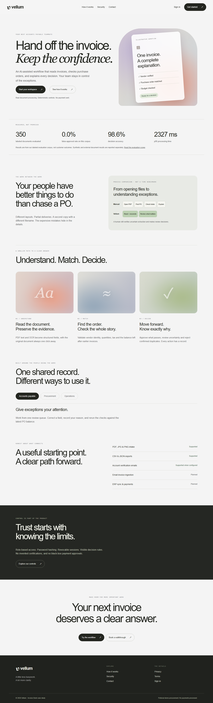
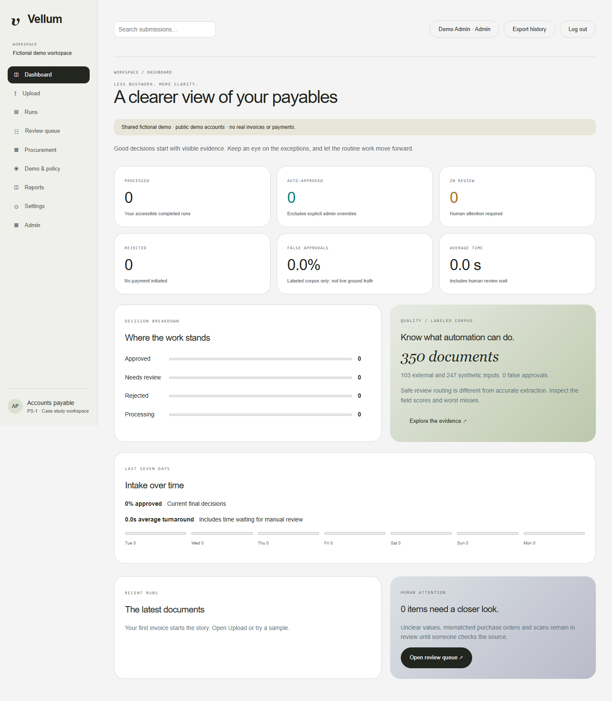
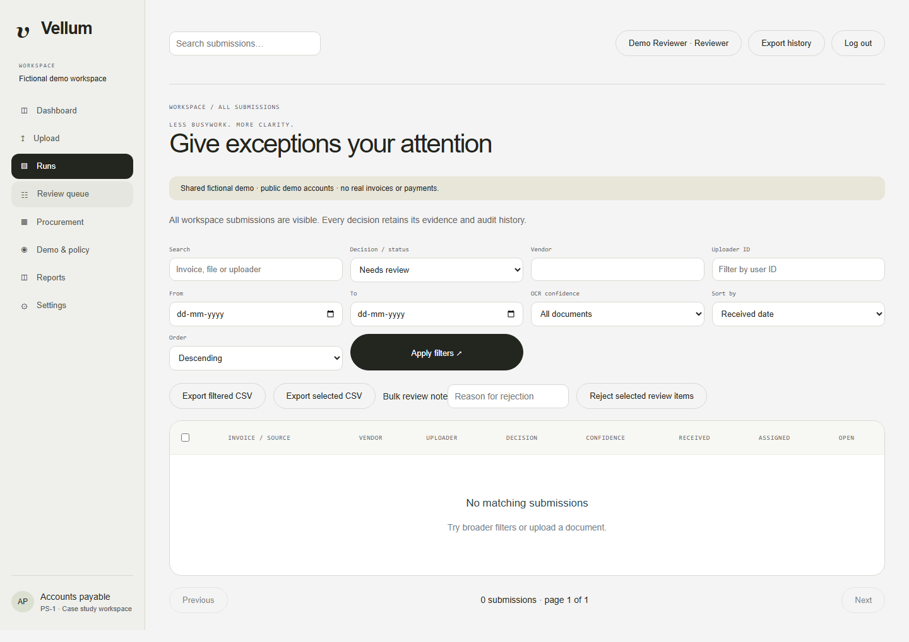

Browser captures at 1440 px. Warm grey canvas, near-black ink, pill controls, hairline borders, rounded cards and muted gradient accents.



Admin controls · Upload · Procurement · Reports · Settings